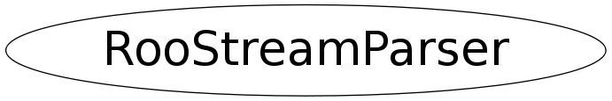

class RooStreamParser
RooStreamParser is a utility class to parse istreams into tokens and optionally convert them into basic types (double,int,string) The general tokenizing philosophy is that there are two kinds of tokens: value and punctuation. The former are variable length, the latter always one character. A token is terminated if one of the following conditions occur - space character found (' ',tab,newline) - change of token type (value -> punctuation or vv) - end of fixed-length token (punctuation only) - start or end of quoted string The parser is aware of floating point notation and will assign leading minus signs, decimal points etc to a value token when this is obvious from the context. The definition of what is punctuation can be redefined.
Function Members (Methods)
public:
Class Charts
{kind=link}
{kind=link}
{kind=link}
{kind=link}

Function documentation
RooStreamParser(istream& is, const TString& errPrefix)
Construct parser on given input stream. Use given errorPrefix to prefix any parsing error messages
TString readToken()
Read one token separated by any of the know punctuation characters This function recognizes and handles comment lines in the istream (those starting with '#', quoted strings ("") the content of which is not tokenized and '+-.' characters that are part of a floating point numbers and are exempt from being interpreted as a token separator in case '+-.' are defined as token separators.
void zapToEnd(Bool_t inclContLines = kFALSE)
Eat all characters up to and including then end of the current line. If inclContLines is kTRUE, all continuation lines marked by the '\\' token are zapped as well
Bool_t expectToken(const TString& expected, Bool_t zapOnError = kFALSE)
Read the next token and return kTRUE if it is identical to the given 'expected' token.
Bool_t readDouble(Double_t& value, Bool_t zapOnError = kFALSE)
Bool_t convertToDouble(const TString& token, Double_t& value)
Bool_t readInteger(Int_t& value, Bool_t zapOnError = kFALSE)
Bool_t convertToInteger(const TString& token, Int_t& value)
Bool_t readString(TString& value, Bool_t zapOnError = kFALSE)
Read a string token. Returns true if an error occurred in reading or conversion. If a the read token is enclosed in quotation marks those are stripped in the returned value
Bool_t convertToString(const TString& token, TString& string)
Convert given token to a string (i.e. remove eventual quotation marks)